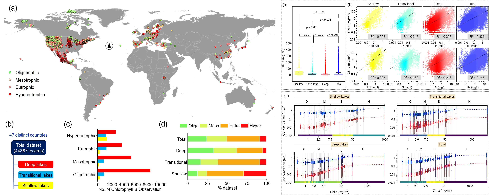
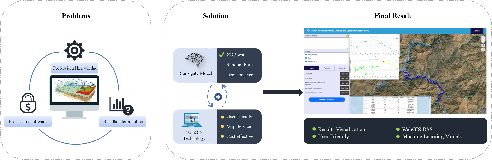
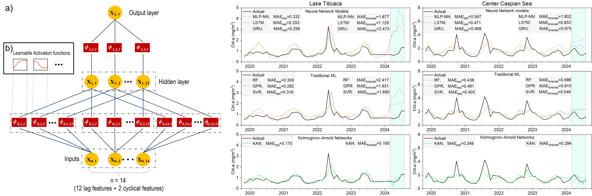
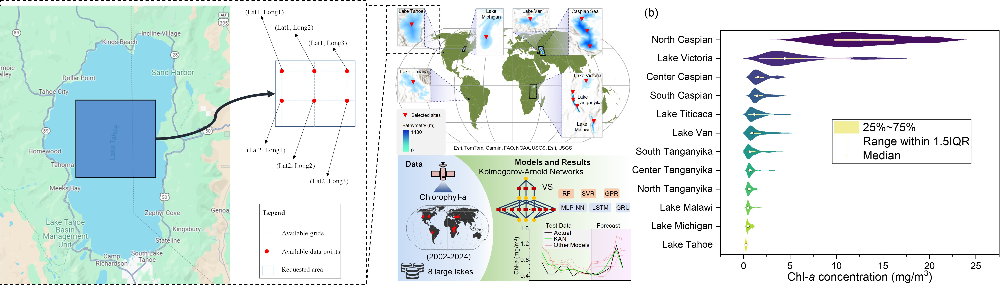

About Me
I am an environmental engineer and researcher specializing in machine learning applications for water quality modeling and spatial decision support systems. My work focuses on developing data-driven tools to address eutrophication, contaminant transport, and watershed management, with publications in journals like Environmental Science & Technology and Expert Systems with Applications. I am currently working as a research assistant at University of Tehran. I'm skilled in Python, GIS, and machine learning, and I enjoy working across different fields to tackle tough environmental problems. With a strong academic foundation and a TOEFL score of 108/120, I am eager to contribute to international research initiatives at the intersection of environmental science and AI.
In my free time, I love developing 2D metroidvania games in Unity as a hobby—it lets me combine coding skills with creative design to build fun, interactive worlds.
Research Interests
Water quality modeling
Studying eutrophication, and Chlorophyll-a and nutrient relationship
Machine learning
Neural networks (ANN, RNN, CNN, LSTM, GRU)
Kolmogorov-Arnold Networks (KAN)
Tranditional models (XGB, RF, SVM, GPR, DT, etc.)
Spatial Analysis
Geographic Information System (GIS) and Remote Sensing (RS)
Education
MSc Environmental Engineering
2019 - 2022
Iran University of Science and Technology
BSc Civil Engineering
2014 - 2019
Golestan University
Research Focus
Eutrophication/Chlorophyll-a Modelling
Developing advanced models to predict chlorophyll-a concentrations and assess eutrophication in freshwater systems using machine learning techniques and global datasets.
Web GIS decision support system
Creating web-based decision support tools for water quality assessment and developing integrated modeling approaches for reservoirs and lakes.
Machine Learning in Hydrology
Applying novel machine learning architectures like Kolmogorov-Arnold Networks (KAN) and hybrid models for Chlorophyll-a forecasting and water resource management.
Remote Sensing Applications
Using remote sensed data for water resources assessment and forecasting.
Publications
Published Papers
Predicting Chlorophyll-a Concentrations in the World's Largest Lakes Using Kolmogorov-Arnold Networks
Authors: Saravani, MJ., Noori, R., Jun, C., Kim, D., Bateni, S. M., Kianmehr, P., & Woolway, R. I.
Journal: Environmental Science and Technology, 2025
A web GIS based integrated water resources assessment tool for Javeh Reservoir
Authors: Saravani, MJ., Saadatpour, M., & Shahvaran, A. R.
Journal: Expert Systems with Applications, 2024
Investigating the accuracy of hybrid models with wavelet transform in the forecast of watershed runoff
Authors: Saravani MJ, Kashef S, Farmahini M, Kashefi M, Zohreh M
Journal: Journal of Water Management Modeling, 2022
DOI: 10.14796/JWMM.C499
Under Review/Revision
Global-Scale Modeling of Nutrient-Chlorophyll Relationships Across Different Lake Depths and Trophic States
Authors: Saravani, MJ., Noori, R., Kim, D., Jun, C., Bateni, S.M., Woolway, R.I., et al.
Journal: Science Advances (submitted March 16, 2025)
Impact of Climatic Factors on Eutrophication in the World's Largest Lake
Authors: Mozafari, Z., Noori, R., Bateni, SM., Jun, C., Kim, D., Saravani, MJ., et al.
Journal: Ecological Indicators (under revision)
Conference Presentations
Developing A Machine Learning-Based Web Tool for Analyzing Eutrophication and Water Quantity Indices
Authors: Saravani MJ, Saadatpour M, Shahvaran AR
Conference: AGU Fall Meeting, 2022
Code: 2022AGUFM.H11I..03S
Current Research Projects
Evaluating Historical and Future Climate Whiplash Events and Their Influence on Flood Risk
This project investigates the increasing frequency and intensity of climate whiplash events (rapid transitions between extreme weather conditions) and their impact on flood risk patterns. Using advanced statistical modeling and climate projections, we aim to develop predictive frameworks to assess vulnerability to these extreme events under different climate change scenarios.
Techniques: Climate modeling, Extreme value analysis, Machine learning
A Global Trophic State Index for Monitoring Freshwater Lake Eutrophication
Monitoring lake trophic states is critical for mitigating eutrophication, a global environmental challenge threatening freshwater biodiversity, water quality, and ecosystem services. Eutrophication imposes significant economic costs by reducing fisheries' productivity, increasing water treatment expenses, diminishing recreational and tourism revenue, and necessitating costly restoration efforts to mitigate its impacts on aquatic ecosystems.
The Carlson Trophic State Index (CTSI), introduced in 1977, remains a cornerstone tool for assessing eutrophication. However, its derivation from a restricted sample of lakes situated in North America limits its universal applicability, as it fails to account for regional variations in climatic, morphometric, ecoregional, hydrological, and anthropogenic drivers of eutrophication.
This study addresses this critical gap by proposing a next-generation, globally calibrated trophic state index informed by a comprehensive dataset of over 13,000 lakes spanning diverse ecoregions, climatic zones, depths, and anthropogenic influences. We employ log-scale fitting equations and advanced modeling frameworks, including multivariate regression, neural networks, and machine learning algorithms to introduce the global trophic state index.
To facilitate future application of the global trophic state index, we also develop an App in Python environment, which displays the calculated trophic states worldwide. By transcending the geographical constraints of traditional indices, this index enables more accurate assessments of eutrophication risks and minimize the uncertainties across lakes in both data-rich and understudied regions.
Techniques: Machine learning, Large-scale data analysis, Python app development
Contact Information
Academic Address
Dr. Noori Research Lab
University of Tehran
Tehran, Iran